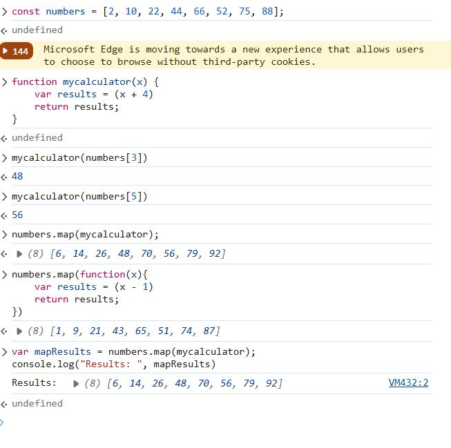
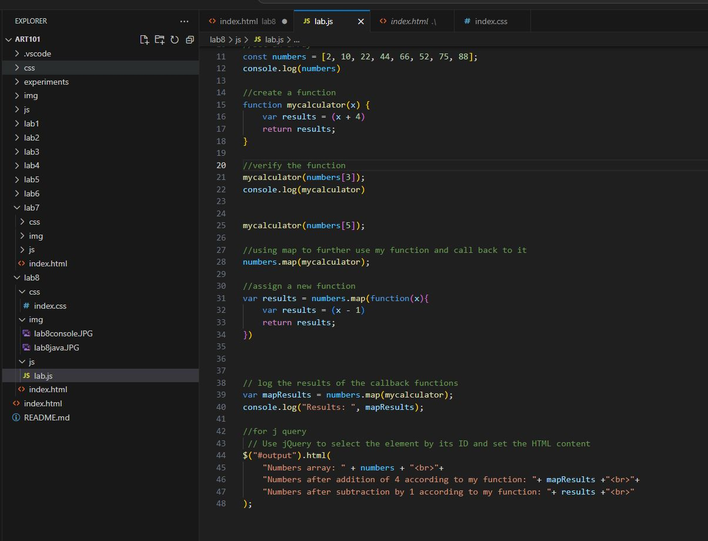

Lab 8 - Anon Functions and Callbacks
Challenge
The challenge of the lab was understanding how a callback function works and what it looks like within java script.
Problems
My script output was not printing at all even after correct formatting implementation, with the help of nick, my lab partnet, I was able to get my script output working.
Reflection
With the expieriences I have now with javascript I feel like I need to reinforce my learnings with practice and references.
Script Output
id="output" class=" minor-section">Here are the images of my console(left) and my js code(right)
 